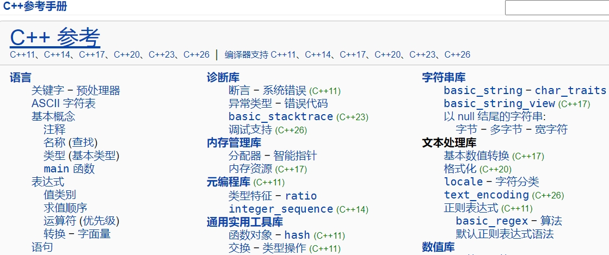

嵌入式科普(29)c代码究竟是如何一步步运行的之C语言运行的本质
一、概述
- 我们讨论C语言运行的本质，是在工程师软件角度上的，不讨论内核和硬件电路运行本质
- C语言是贴近硬件的高级语言，C语言是跨平台的，本文主要讨论嵌入式C语言
- 先给结论：C语言运行的本质是栈式函数调用和编译型语言
- 通过一个简单的 C 语言程序，展示了函数调用栈的工作原理
二、相关资料
- https://baike.baidu.com/item/C11/3245086
- https://www.iso.org/standard/82075.html
- https://cn.bing.com/search?q=cppreference
- https://cppreference.cn/w/


三、C语言是跨平台的
C语言之所以能在 MCU、嵌入式Linux、Windows 和 Ubuntu 等不同平台上运行，是因为 C 语言具有 跨平台性 和 可移植性。但仍然存在一些区别。
3.1 跨平台的含义
跨平台 是指程序能够在不同的硬件平台或操作系统上运行。
3.1.1 CPU 架构的不同
C 语言通过编译器实现跨 CPU 架构（如 x86、ARM、MIPS、RISC-V）的支持运行。编译器会根据目标 CPU 架构生成对应的机器码。
3.1.2 操作系统的不同
C 语言通过标准库（如 stdio.h、stdlib.h） 和条件编译（如 #ifdef） 实现跨操作系统如 Windows、Linux、macOS、RTOS等）的支持。
3.2 跨平台的实现
3.2.1 标准库
C 标准库（如 stdio.h、stdlib.h）提供了跨平台的函数接口。
例如，printf 函数在 Windows 和 Linux 上的行为是一致的。
3.2.3 条件编译
使用预处理器指令（如 #ifdef）区分不同平台的代码。
3.2.4 跨平台库
使用跨平台库（如 Qt）简化开发。
3.2.5 编译器支持
使用支持多平台的编译器（如 GCC、Clang）。
例如，GCC 可以为 x86、ARM、MIPS 等架构生成机器码。
四、C语言运行的本质
4.1 栈式函数调用
4.1.1 "栈式函数调用"和"函数调用栈"的区别
- 栈式函数调用主要强调机制，即通过栈来管理函数调用和返回
- 函数调用栈主要强调状态，即栈中保存的函数调用信息。
- 栈式函数调用 是实现 函数调用栈 的机制。
- 函数调用栈 是 栈式函数调用 的具体表现。
- 现代编程语言大多数都是栈式函数调用
4.1.2 函数调用的本质
-
函数调用：
程序执行流程从一个函数跳转到另一个函数。 -
函数返回：
程序执行流程从被调用函数返回到调用函数。
4.1.3 栈的作用
-
保存上下文：
栈用于保存函数调用的上下文（如返回地址、局部变量、寄存器的值）。 -
管理执行流程：
栈式调用确保了函数调用和返回的顺序性和正确性。
4.1.4 递归调用
栈式函数调用支持递归调用，每次递归调用都会创建一个新的栈帧。
4.2 编译型语言
4.2.1 编译型语言和非编译型语言的区别
编译型语言和非编译型语言的区别主要在于 代码的执行方式，而不是函数调用机制
- 编译型语言;
- 编译过程：
源代码通过编译器转换为机器码。 - 执行方式：
机器码直接运行在硬件上。 - 优点：
执行效率高。
编译器可以进行各种优化。 - 示例：
C、C++、Rust。
- 编译过程：
- 非编译型语言:
- 解释执行：
源代码通过解释器逐行解释执行。 - 字节码编译：
源代码编译为中间代码（字节码），然后在虚拟机上执行。 - 优点：
跨平台。
开发效率高。 - 示例：
Python、JavaScript、Ruby。
- 解释执行：
4.2.2 C语言的编译过程
- .c ---> .o ---> .exe/.elf ---> .bin
- 编译：嵌入式科普(22)c代码究竟是如何一步步运行的之链接
- 链接：嵌入式科普(21)c代码究竟是如何一步步运行的之编译
五、本文主题：C代码的运行
为了方便理解，c语言的编译可以细分为编译和链接两个过程；
c语言的运行可以细分为加载和执行两个过程，我在嵌入式c语言的角度称为“运行环境准备”和“栈式函数调用”
5.1 加载/运行环境准备
5.1.1 mcu运行环境准备
startup.s启动文件
- 初始化最基本的硬件（如内核、cpu、cache、时钟、rom/ram等）。
- 从存储设备（如 内置Flash、外置Flash、SD 卡等）初始化栈（Stack）、堆（Heap）、.data 段、.bss 段、浮点、标准库、部分外设等
- 跳转到main
5.1.1.1 普通mcu stm32
.section .text.Reset_Handler
.weak Reset_Handler
.type Reset_Handler, %function
Reset_Handler:
ldr sp, =_estack /* set stack pointer */
/* Call the clock system initialization function.*/
bl SystemInit
/* Copy the data segment initializers from flash to SRAM */
movs r1, #0
b LoopCopyDataInit
CopyDataInit:
ldr r3, =_sidata
ldr r3, [r3, r1]
str r3, [r0, r1]
adds r1, r1, #4
LoopCopyDataInit:
ldr r0, =_sdata
ldr r3, =_edata
adds r2, r0, r1
cmp r2, r3
bcc CopyDataInit
ldr r2, =_sbss
b LoopFillZerobss
/* Zero fill the bss segment. */
FillZerobss:
movs r3, #0
str r3, [r2], #4
LoopFillZerobss:
ldr r3, = _ebss
cmp r2, r3
bcc FillZerobss
/* Call static constructors */
bl __libc_init_array
/* Call the application's entry point.*/
bl main
LoopForever:
b LoopForever
5.1.1.2 跨界mcu/mpu RZN2L
BSP_TARGET_ARM void system_init (void)
{
__asm volatile (
"set_hactlr: \n"
" MOVW r0, %[bsp_hactlr_bit_l] \n" /* Set HACTLR bits(L) */
" MOVT r0, #0 \n"
" MCR p15, #4, r0, c1, c0, #1 \n" /* Write r0 to HACTLR */
::[bsp_hactlr_bit_l] "i" (BSP_HACTLR_BIT_L) : "memory");
__asm volatile (
"set_hcr: \n"
" MRC p15, #4, r1, c1, c1, #0 \n" /* Read Hyp Configuration Register */
" ORR r1, r1, %[bsp_hcr_hcd_disable] \n" /* HVC instruction disable */
" MCR p15, #4, r1, c1, c1, #0 \n" /* Write Hyp Configuration Register */
::[bsp_hcr_hcd_disable] "i" (BSP_HCR_HCD_DISABLE) : "memory");
__asm volatile (
"set_vbar: \n"
" LDR r0, =__Vectors \n"
" MCR p15, #0, r0, c12, c0, #0 \n" /* Write r0 to VBAR */
::: "memory");
#if (0 == BSP_CFG_CORE_CR52)
__asm volatile (
"LLPP_access_enable: \n"
/* Enable PERIPHPREGIONR (LLPP) */
" MRC p15, #0, r1, c15, c0,#0 \n" /* PERIPHPREGIONR */
" ORR r1, r1, #(0x1 << 1) \n" /* Enable PERIPHPREGIONR EL2 */
" ORR r1, r1, #(0x1) \n" /* Enable PERIPHPREGIONR EL1 and EL0 */
" DSB \n" /* Ensuring memory access complete */
" MCR p15, #0, r1, c15, c0,#0 \n" /* PERIPHREGIONR */
" ISB \n" /* Ensuring Context-changing */
::: "memory");
#endif
....
....
....
/* Jump to main. */
main();
5.1.2 嵌入式Linux启动U-boot和内核
U-boot和内核都有c代码
- 汇编代码，负责完成最基本的硬件初始化（如设置堆栈指针、关闭中断、初始化内存控制器）。
- 在汇编代码完成初始化后，U-Boot 跳转到 C 语言代码的入口点（通常是 board_init_f 或 board_init_r）
- C 语言代码进一步初始化硬件（如串口、网络、存储设备）
- 加载 Linux 内核和设备树到内存
- 跳转到 Linux 内核的入口点汇编代码（如 head.S），负责完成最基本的硬件初始化（如设置页表、启用 MMU）
- Linux 内核跳转到 C 语言代码的入口点（start_kernel）
- C 语言代码进一步初始化硬件（如中断控制器、设备驱动）
- 挂载根文件系统。
- 启动第一个用户空间进程（通常是 init 或 systemd）
5.1.3 window和Ubuntu c程序加载
- 操作系统负责C运行环境准备，c代码直接运行到main函数
- 程序执行
./hello
.\hello.exe
5.2 执行/栈式函数调用
C语言运行环境准备好了之后，代码运行到main函数，mcu、嵌入式Linux、window、Ubuntu中c代码执行的国产是一样的，即栈式函数调用
5.2.1 数据结构---栈
栈是一种后进先出LIFO的数据结构，通常用一个数组或链表实现。栈有两个主要操作：
- 压栈（Push）：将数据放入栈顶。
- 出栈（Pop）：从栈顶移除数据。
- 栈有一个指针（通常称为栈顶指针SP），指向当前栈顶的位置。

5.2.2 Windows vscode运行
#include <stdio.h>
void func_c(void){
int c = 0;
c++;
printf("func_c\n");
}
void func_b(void){
int b = 0;
b++;
printf("func_b\n");
func_c();
}
void func_a(void){
int a = 0;
a++;
printf("func_a\n");
func_b();
}
int main(){
printf("hello world\n");
func_a();
return 0;
}

5.2.3 IAR运行CM3内核

5.2.4 CM3栈示意图
- 注意地址高低在图中的位置
5.2.4.1 分析"静态栈"
- 在十六、e2studio VS STM32CubeIDE之"静态栈"分析窗口的分享可以分析"静态栈"
5.2.4.2 分析"动态栈"
5.2.5 不同的cpu指令集
- Windows 64

- CM3内核
六、总结
- C语言运行的本质是栈式函数调用和编译型语言
- C函数调用栈的分析是重要技能
- 理解C语言的编译链接原理
- 最后对该系列（嵌入式科普(29)c代码究竟是如何一步步运行的）总结：
- 1、嵌入式C代码经过编译、链接生成可执行文件和bin文件；
- 2、在ROM boot作用下执行到汇编代码，汇编代码初始化c语言的运行环境（cpu、flash、ram、text、data、bss、时钟等），跳转到main函数；
- 3、用户C代码按照栈式函数调用的方式执行